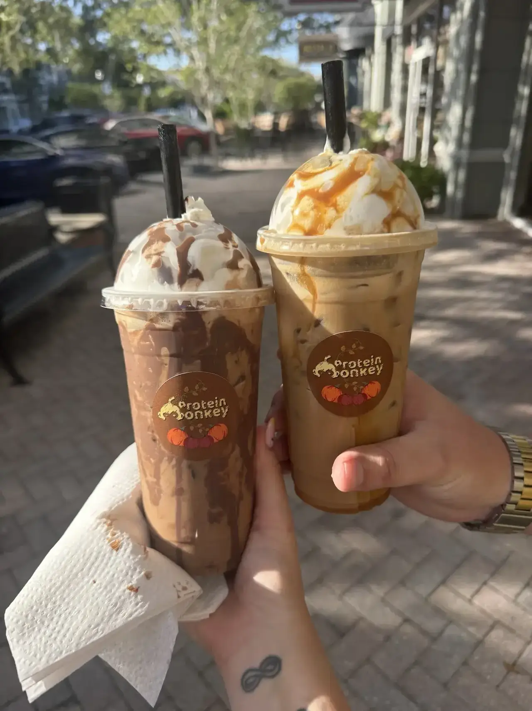
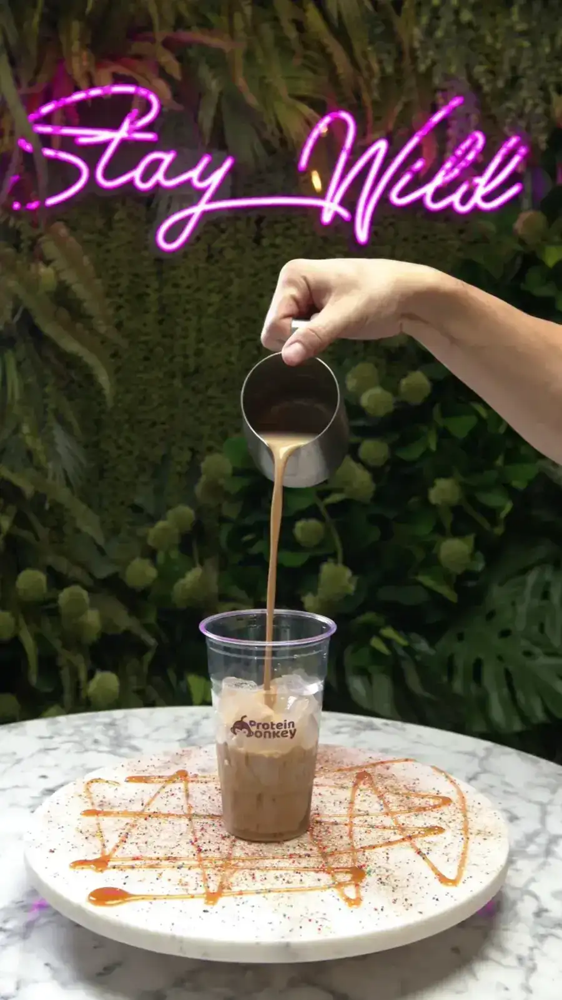
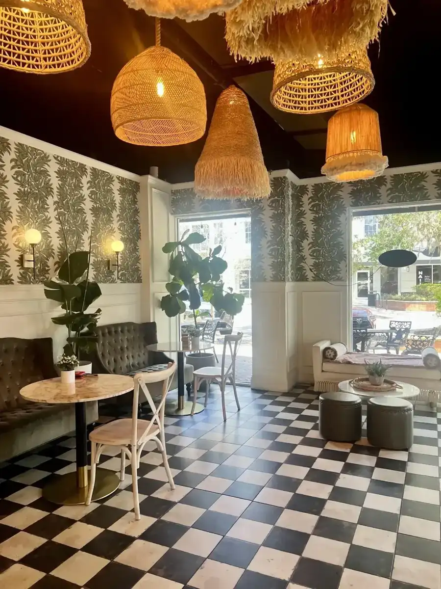
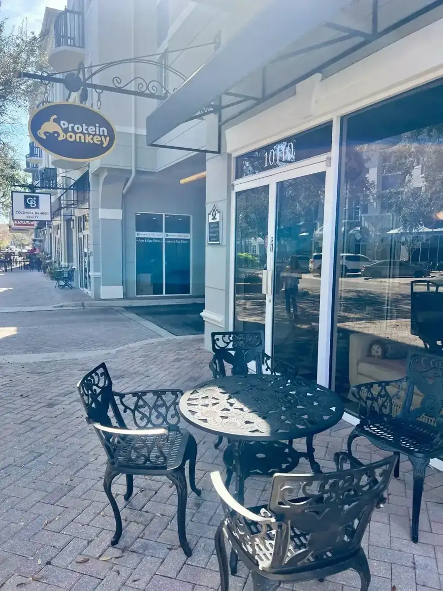
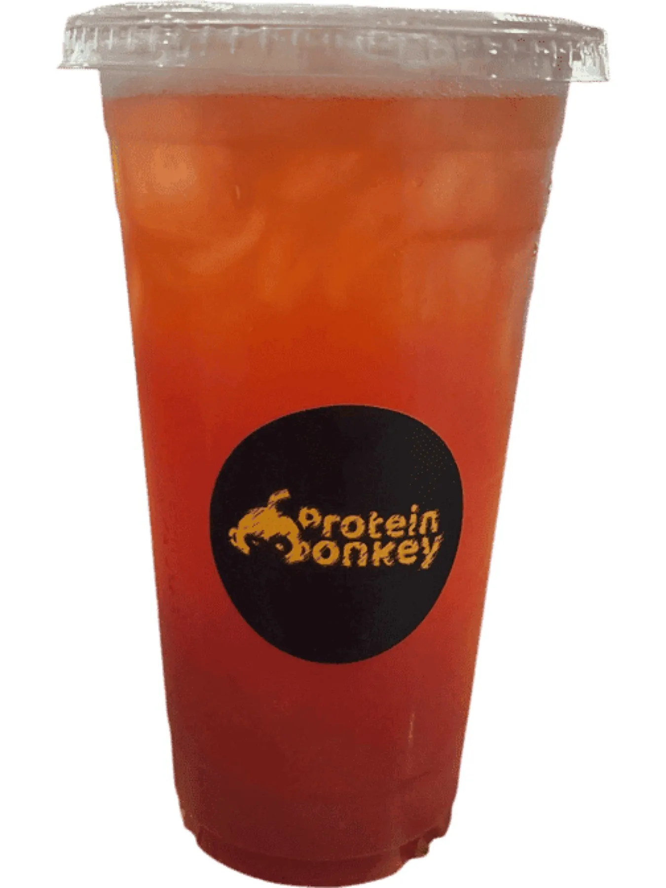
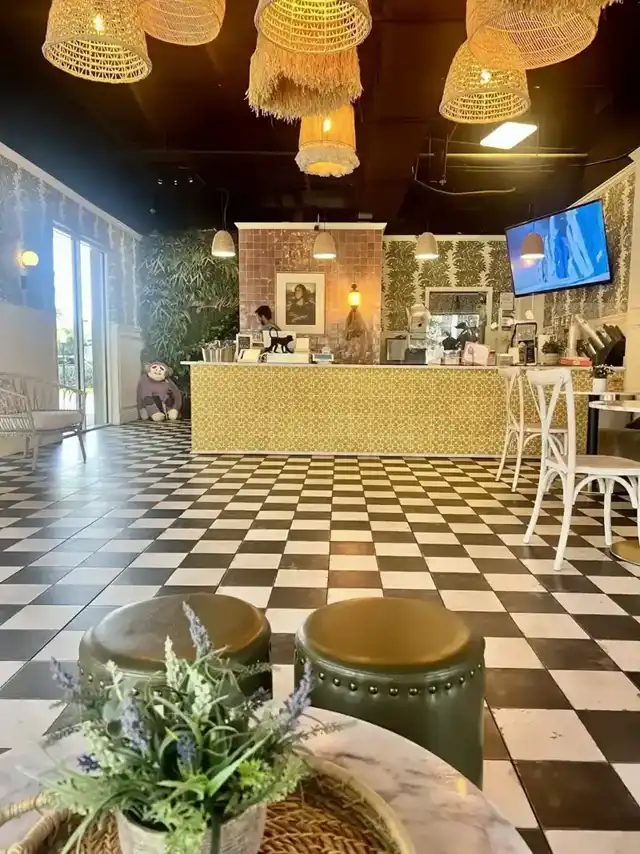

Protein shakes
A wide range of flavors. One guest's pick: peanut butter and jelly with extra protein, oatmeal and banana.
Protein shakes and waffles · Tampa, FL
Shakes, waffles, teas and protein coffee, with the macros spelled out on the menu.
What regulars order
Drinks and waffles guests keep coming back for.

A wide range of flavors. One guest's pick: peanut butter and jelly with extra protein, oatmeal and banana.

The El Cubanito is a guest favorite after a long hike. It has no added sugar.

Protein coffee frappes such as Dulce de Leche and pumpkin spice, plus teas.



4.7 ★ · 184 Google reviews
GUEST CHECK№ 1Me and my fiancé absolutely love this place! We come about once a week or at least every other week! We live in the neighborhood so it’s super convenient, & it’s dog friendly! Everything is extremely fresh, and tastes amazing. There’s a wide variety on the menu, and the way everything tastes, you would never know you’re eating/drinking something healthy.
GUEST CHECK№ 2I tried the El Cubanito protein waffle after a 7 mile hike on the upper Tampa Bay Trail. Needless to say, I was very hungry. The waffle was the perfect size and tasted really good. There is no added sugar so you don’t have to feel guilty about eating it. There are other items on the menu I’ll definitely go back and try. As you can see from the photos, the aesthetic is very cute and welcoming.
GUEST CHECK№ 3Loooovvvvvved my protein coffee frapp!!! 😍 This was my first time to Protein Monkey - their vibe is super cute & welcoming….not to mention the scent of fresh, sugary, sweet waffles which greets you. I got the Dulce de Leche protein frapp & it was deeeeelish. It’s very sweet & tasted like caramel popcorn, but in a good way 🥰 My friend got the pumpkin spice protein frapp & damn. Sweet, but blissful.

Since the first pot of coffee
Protein Monkey is on Montague Street in Tampa, in a room with checkerboard floors, tufted booths, woven lamps and a neon sign that says Stay Wild. There are table games, and dogs are welcome.
Guests say the owners are kind and personable. One regular knows Luis and his wife by name and stops in for a shake or a waffle whenever nearby. The owners list the macros for every item, and they run holiday specials.
Slide on in
10110 Montague St, Tampa, FL 33626
Outdoor tables out front. Dogs are welcome and there are games inside.